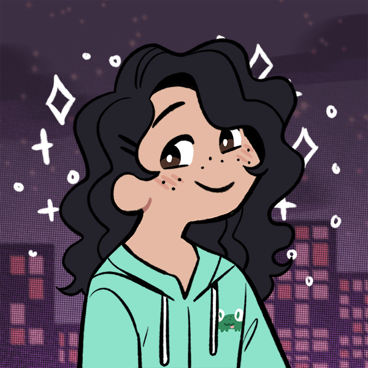
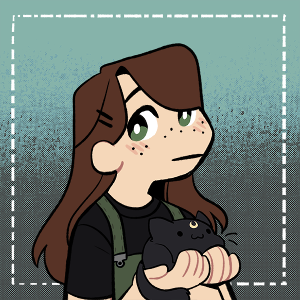

| Andrea |
Shira |
Rebecca |
|  |
 |
 |
| Hi, my name is Andrea! I really enjoy playing volleyball and basketball with my family and playing with my dog during the evenings after school. I also enjoy drawing, painting, and making different designs out of polymer clay earrings. |
Hi I'm Shira, I love food, video games, clothes and so much more, I really like the pool and I love trying new things. I also love traveling with my family but also staying home and binge-watching my favorite TV show, Greys Anatomy. |
Hey, I'm Rebecca! I have 2 cats and I love woodworking! You'll see me walking around GMS with a cow print bucket hat and a giant chevron pattern backpack. Some of my hobbies include swimming, playing with my cats, and making things out of polymer clay.
|
How This Company Progressed
We started this company on phase 1 of entre. We advertised rings, earrings, and mask necklaces. We got split up in round 2, and Shira joined us! We then formed Ellokey. We started with the earrings and keychains idea, then we learned how to code our own website. We made the name of our company: E for earrings and key for keychains to represent our company name.